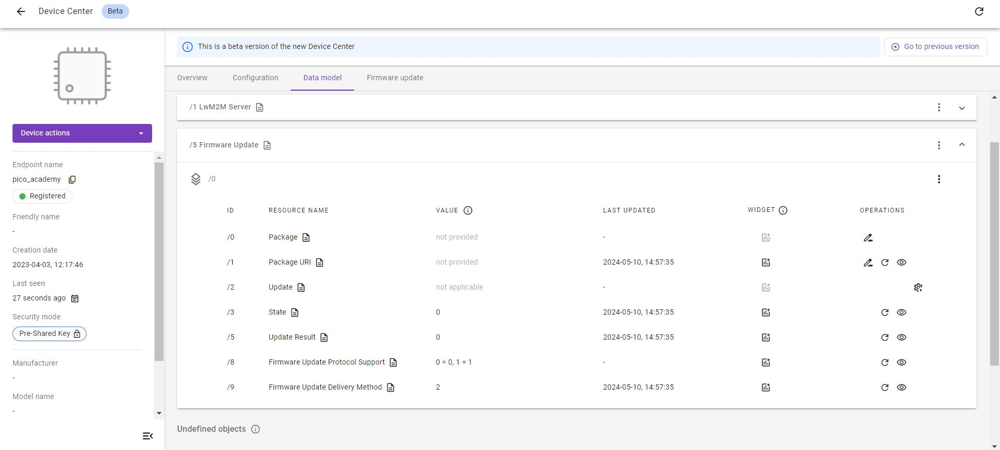
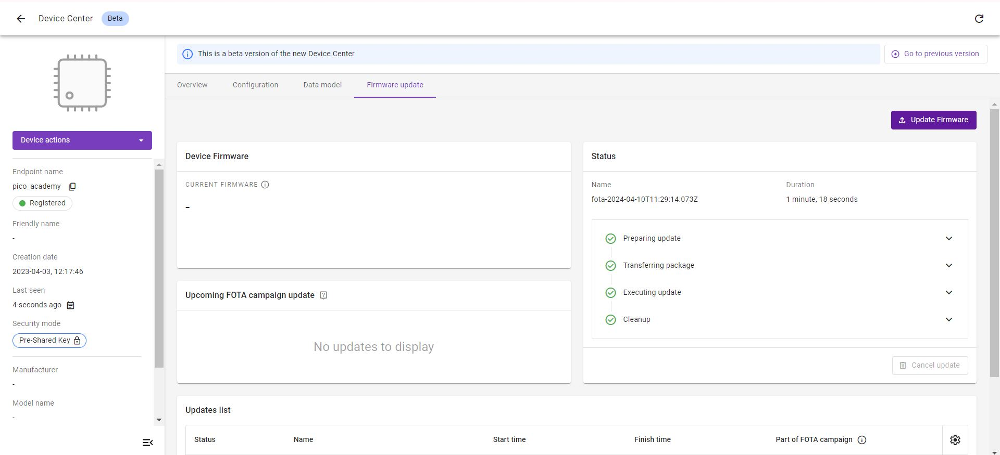
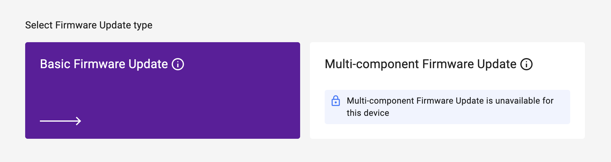
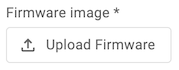
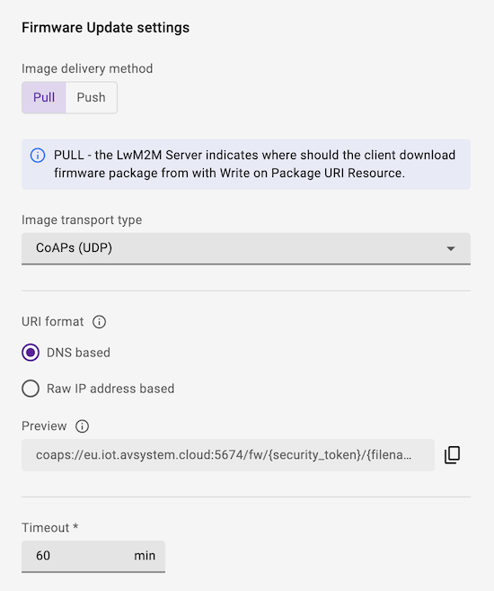
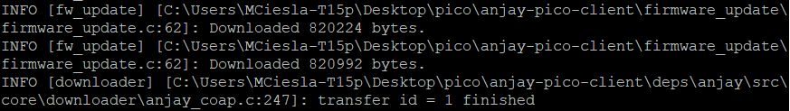
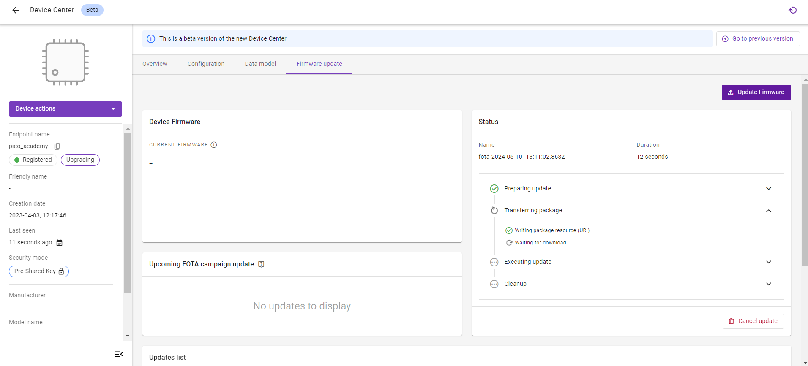
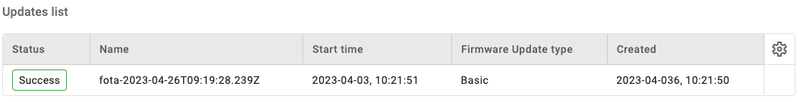
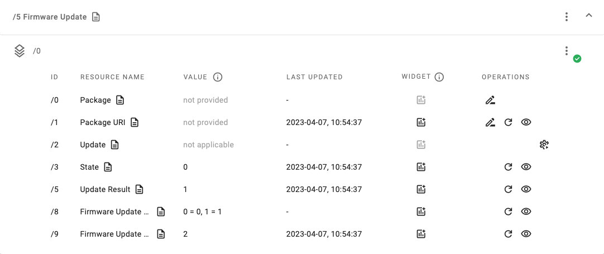

Exercise 5: Implement Firmware Update#
In this exercise, we implement Object 5 - Firmware Update. It utilizes the pico_fota_bootloader to swap the flash partitions after downloading the appropriate binary file from Coiote IoT DM.
Prerequisites#
- A Raspberry Pi Pico W board with a USB cable
- Installed minicom (for Linux), RealTerm, PuTTy (for Windows), or another serial communication program.
- An active Coiote IoT DM user account
- Completed exercise 4A from module 4
- Completed exercise 4B from module 4
What is Bootloader and why do I need this here?#
A bootloader as a program is responsible for loading and launching the operating system or firmware of a computer or embedded system. It is typically the initial program that runs when a device is powered on or restarted. The bootloader undertakes the essential configuration of internal modules, ensuring that fundamental settings are established for subsequent operations.
Implement Firmware Update#
Anjay comes with a built-in Firmware Update module, which simplifies FOTA implementation for the user. Let’s dive into the code and discuss its most important fragments.
Note
This part only describes functions that are in the code in Anjay-pico-client/firmware_update directory. The user doesn’t have to modify the code.
In our code, firmware update module installation will be taken by the function declared in firmware_update.h:
firmware_update.h
#pragma once
#include <anjay/anjay.h>
int fw_update_install(anjay_t *anjay);
In the main.c file the installation of the Firmware Update module takes place in the anjay_task() funktion:
main.c
void anjay_task(__unused void *params) {
init_wifi();
pfb_firmware_commit();
anjay_configuration_t config = {
.endpoint_name = ENDPOINT_NAME,
.in_buffer_size = 2048,
.out_buffer_size = 2048,
.msg_cache_size = 2048,
};
if (!(g_anjay = anjay_new(&config))) {
avs_log(main, ERROR, "Could not create Anjay object");
exit(1);
}
if (setup_security_object() || setup_server_object()) {
avs_log(main, ERROR, "Failed to initialize basic objects");
exit(1);
}
if (fw_update_install(g_anjay)) {
avs_log(main, ERROR, "Failed to initialize FOTA object");
exit(1);
}
main_loop();
anjay_delete(g_anjay);
}
The Firmware Update module consists of user-implemented callbacks of various sorts implemented in the firmware_update.c file:
-
stream_openis called whenever a new firmware download is started by the server. Its main responsibility is to prepare client for receiving firmware chunks - e.g. by opening a file or getting flash storage ready, etc.firmware_update.c
static int fw_stream_open(void *user_ptr, const char *package_uri, const struct anjay_etag *package_etag) { (void) user_ptr; (void) package_uri; (void) package_etag; pfb_initialize_download_slot(); flash_aligned_writer_new(writer_buf, AVS_ARRAY_SIZE(writer_buf), pfb_write_to_flash_aligned_256_bytes, &writer); downloaded_bytes = 0; update_initialized = true; avs_log(fw_update, INFO, "Init successful"); return 0; } -
stream_writeis called whenever there is a next firmware chunk received, ready to be stored. Its responsibility is to append the chunk to the storage.firmware_update.c
static int fw_stream_write(void *user_ptr, const void *data, size_t length) { (void) user_ptr; assert(update_initialized); int res = flash_aligned_writer_write(&writer, data, length); if (res) { return res; } downloaded_bytes += length; avs_log(fw_update, INFO, "Downloaded %zu bytes.", downloaded_bytes); return 0; } -
stream_finishis called whenever the writing process is finished and the stored data can now be thought of as a complete firmware image. It may be a good moment here to verify if the entire firmware image is valid.firmware_update.c
static int fw_stream_finish(void *user_ptr) { (void) user_ptr; assert(update_initialized); update_initialized = false; int res = flash_aligned_writer_flush(&writer); if (res) { avs_log(fw_update, ERROR, "Failed to finish download: flash aligned writer flush failed, " "result: %d", res); return -1; } if (pfb_firmware_sha256_check(downloaded_bytes)) { avs_log(fw_update, ERROR, "SHA256 check failed"); return -1; } return 0; } -
resetis called whenever there is an error during firmware download, or if the Server decides to not pursue firmware update with downloaded firmware (e.g. because it was notified that firmware verification failed).firmware_update.c
static void fw_reset(void *user_ptr) { (void) user_ptr; update_initialized = false; } static void fw_update_reboot(avs_sched_t *sched, const void *data) { (void) sched; (void) data; avs_log(fw_update, INFO, "Rebooting....."); pfb_perform_update(); } -
perform_upgradeis called whenever the download is finished, the firmware is successfully verified on the Client and the Server decides to upgrade the device.firmware_update.c
static int fw_perform_upgrade(void *anjay) { pfb_mark_download_slot_as_valid(); avs_log(fw_update, INFO, "The firmware will be updated at the next device reset"); return AVS_SCHED_DELAYED(anjay_get_scheduler(anjay), NULL, avs_time_duration_from_scalar(1, AVS_TIME_S), fw_update_reboot, NULL, 0); }
To install the module, we are going to use the fw_update_install() function which is called in the main.c file:
firmware_update.c
static const anjay_fw_update_handlers_t handlers = {
.stream_open = fw_stream_open,
.stream_write = fw_stream_write,
.stream_finish = fw_stream_finish,
.reset = fw_reset,
.perform_upgrade = fw_perform_upgrade
};
int fw_update_install(anjay_t *anjay) {
anjay_fw_update_initial_state_t state = { 0 };
if (pfb_is_after_firmware_update()) {
state.result = ANJAY_FW_UPDATE_INITIAL_SUCCESS;
avs_log(fw_update, INFO, "Running on a new firmware");
} else if (pfb_is_after_rollback()) {
state.result = ANJAY_FW_UPDATE_INITIAL_NEUTRAL;
avs_log(fw_update, WARNING, "Rollback performed");
}
return anjay_fw_update_install(anjay, &handlers, anjay, &state);
}
Flash alignment#
Flash APIs require that the length of data to write will be a multiple of 256 bytes, so we need to enforce that by additional buffering. For this in the firmware_update directory there are two more files:
-
flash_aligned_writer.c
flash_aligned_writer.c
#include <assert.h> #include <stddef.h> #include <stdint.h> #include <avsystem/commons/avs_utils.h> #include "flash_aligned_writer.h" void flash_aligned_writer_new(uint8_t *batch_buf, size_t batch_buf_max_len_bytes, flash_aligned_writer_cb_t *writer_cb, flash_aligned_writer_t *out_writer) { assert(batch_buf); assert(batch_buf_max_len_bytes); assert(writer_cb); out_writer->batch_buf = batch_buf; out_writer->batch_buf_max_len_bytes = batch_buf_max_len_bytes; out_writer->batch_buf_len_bytes = 0; out_writer->write_offset_bytes = 0; out_writer->writer_cb = writer_cb; } int flash_aligned_writer_write(flash_aligned_writer_t *writer, const uint8_t *data, size_t length_bytes) { while (length_bytes > 0) { const size_t bytes_to_copy = AVS_MIN( writer->batch_buf_max_len_bytes - writer->batch_buf_len_bytes, length_bytes); memcpy(writer->batch_buf + writer->batch_buf_len_bytes, data, bytes_to_copy); data += bytes_to_copy; length_bytes -= bytes_to_copy; writer->batch_buf_len_bytes += bytes_to_copy; if (writer->batch_buf_len_bytes == writer->batch_buf_max_len_bytes) { int res = writer->writer_cb(writer->batch_buf, writer->write_offset_bytes, writer->batch_buf_len_bytes); if (res) { return res; } writer->write_offset_bytes += writer->batch_buf_len_bytes; writer->batch_buf_len_bytes = 0; } } return 0; } int flash_aligned_writer_flush(flash_aligned_writer_t *writer) { if (writer->batch_buf_len_bytes == 0) { return 0; } int res = writer->writer_cb(writer->batch_buf, writer->write_offset_bytes, writer->batch_buf_len_bytes); if (res) { return res; } writer->write_offset_bytes += writer->batch_buf_len_bytes; writer->batch_buf_len_bytes = 0; return 0; } -
flash_aligned_writer.h
flash_aligned_writer.h
#pragma once #include <stddef.h> #include <stdint.h> typedef int flash_aligned_writer_cb_t(uint8_t *src, size_t offset_bytes, size_t len_bytes); typedef struct { uint8_t *batch_buf; size_t batch_buf_max_len_bytes; size_t batch_buf_len_bytes; size_t write_offset_bytes; flash_aligned_writer_cb_t *writer_cb; } flash_aligned_writer_t; void flash_aligned_writer_new(uint8_t *batch_buf, size_t batch_buf_max_len_bytes, flash_aligned_writer_cb_t *writer_cb, flash_aligned_writer_t *out_writer); int flash_aligned_writer_write(flash_aligned_writer_t *writer, const uint8_t *data, size_t length); int flash_aligned_writer_flush(flash_aligned_writer_t *writer);
Recompile the application and flash the board#
Your data model doesn't have Firmware Update Object /5. For updating this set Raspberry Pi Pico W to the BOOTSEL state (by powering it up with the BOOTSEL button pressed) and copy the build/firmware_update/pico_fota_bootloader/pico_fota_bootloader.uf2 file into it. Right now the Raspberry Pi Pico W is flashed with the bootloader but does not have proper application in the application FLASH memory slot yet. Then, set Raspberry Pi Pico W to the BOOTSEL state again and copy the build/firmware_update/firmware_update.uf2 file. The board should reboot and start the firmware_update application.
Prepare the Firmware Update in Coiote#
-
In the Coiote IoT Device Management platform, go to Device Inventory.
-
Go to the Data model tab to validate if the Firmware Update Object
/5is present. If so, the Object is supported by the LwM2M Client.
-
Go to the Firmware update tab.
-
Click the Update Firmware button.

-
Select Basic Firmware Update.

-
Upload the firmware image.

Note
The firmware image
firmware_update_fota_image_encrypted.binfile can be found in thebuild/firmware_updatedirectory. -
Choose between Pull and Push:
-
Pull method (recommended): The LwM2M Client receives the URI of the file that is to be downloaded and pulls the file from it.
-
Push method: The LwM2M Server pushes the firmware file to the device.
Info
Pull supports the following transport types:
CoAPorCoAPsoverUDPCoAPorCoAPsoverTCPHTTPorHTTPs
Push transmits the firmware over the same transport type as is used for device management, which is
CoAPsoverUDPby default.Which transport protocol to choose?
Downloads using
CoAP(s)overUDPtend to be slow due to the limitation of the maximum CoAP Block size of 1024 bytes and the required acknowledgements for each Block transfer.Choosing
CoAP(s)overTCPorHTTP(s)usually results in faster download speeds. However, not every device supports these transport protocols.
-
-
Click Schedule Update to trigger the Firmware Update process.
Note
After doing so, a Firmware Update process will begin. Check the serial output logs - the
INFO [fw_update] [/anjay-pico-client/firmware_update/firmware_update.c]: Downloaded X byteslogs should appear.
Download & Upgrade Process#
If the Firmware Update is scheduled successfully, the device starts downloading the firmware at the next practical opportunity. The actual firmware update starts once the integrity and authenticity of the firmware image has been validated by the LwM2M Client.

Once executed successfully, the status in the Update list panel changes to Success.

Note
While the device is updating its firmware, it will deregister and reboot using the new firmware. This process may time several minutes.
Monitoring the update process#
During the update process, the status of the firmware update can be monitored by reviewing the Resources State /5/0/3 and Update Results /5/0/5.
To find the Resources, select the Data model tab and open the Firmware Update Object /5.

If no errors occur, the update process follows this pattern:
- Downloading
state 1&update result 0 - Downloaded
state 2&update result 0 - Updating
state 3&update result 0 - Updated
state 0&update result 1
Update successful?
Does the State /5/0/3 report 0 and the Update Result /5/0/5 report 1? Congratulations! You've successfully updated the firmware of your device. 🎉